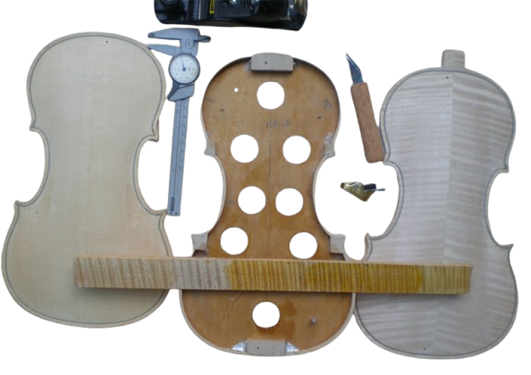
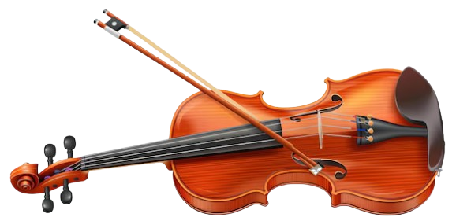
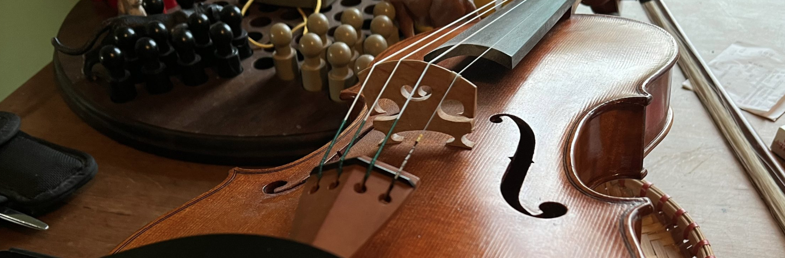

Wellington School of Violin Making — New Zealand's home for the traditional craft of lutherie, founded by master luthier John Schmidt.
About the School
The Wellington School of Violin Making offers an immersive, hands-on education in the art and science of building stringed instruments. Located in the creative heart of New Zealand's capital, our workshop provides an intimate learning environment where students master techniques passed down through centuries of European lutherie tradition.
Under the guidance of founder John Schmidt and visiting master luthiers, students learn every aspect of the craft — from selecting and carving tonewoods to applying hand-finished varnish and performing expert set-up for optimal playability and tone.
Our Workshop
Click any image to explore full-screen. Use arrow keys or the buttons to navigate.



Hear the Difference
Listen to violins crafted in our workshop, played by professional musicians. Each instrument is unique — shaped by the hands and ear of the maker.
Watch & Learn
See the work of our workshop — the techniques, tools, and passion that go into every instrument we build.


The Curriculum
Our structured programme takes students from foundational skills to professional-level instrument making, repair, and restoration.
Wood selection, tool sharpening, technical drawing, and your first violin build from start to finish. Students learn the geometry and acoustics underlying classical instrument design.
Advanced arching and graduation, varnish chemistry and application, viola and cello construction. Students develop their own tonal and aesthetic voice as makers.
Restoration and repair, bow rehairing, sound post and bridge fitting, and business skills for establishing a professional workshop. Students complete a final exhibition instrument.
Our Founder
Master Luthier & Director
John Schmidt founded the Wellington School of Violin Making with a singular vision: to create a world-class lutherie programme in the Southern Hemisphere. With decades of experience building and restoring fine stringed instruments, John brings deep technical expertise and an unwavering commitment to the craft.
His philosophy centres on the belief that great instruments are born from a thorough understanding of wood, acoustics, and the traditions of the Cremonese masters — combined with the patience and sensitivity that only hands-on practice can develop.
John continues to build instruments from his Wellington workshop and maintains an active restoration practice alongside his teaching.
Get in Touch
Whether you're ready to apply or simply have questions about our programme, we'd love to hear from you.
Contact Us